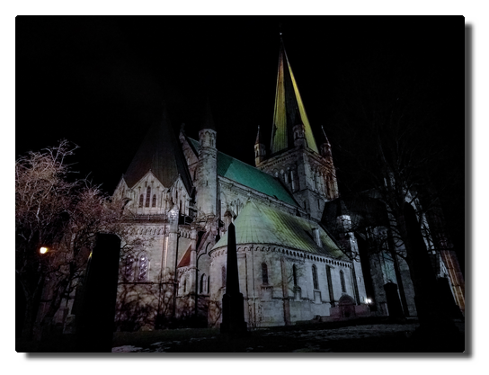
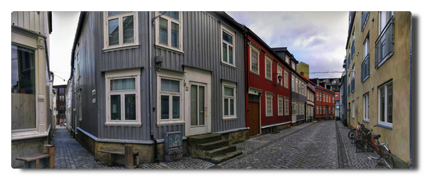
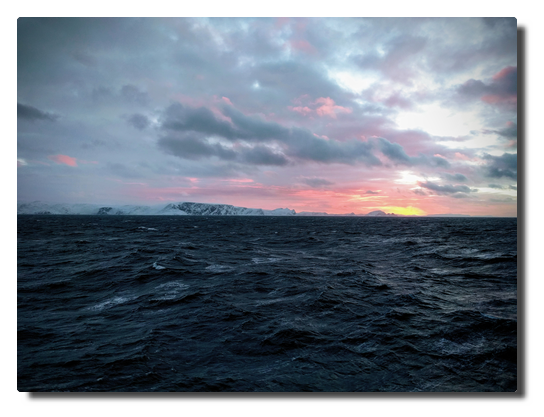
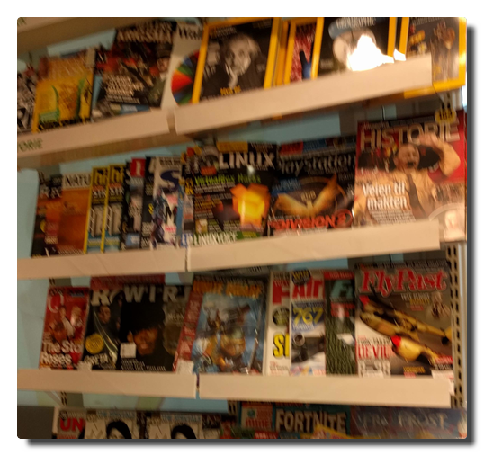

Love Boat - The Real Story. Bergen
Tag 13. Die Stadt des Regens
 |
|---|
| Boot und Bergen |
Bei schönstem Sonnenschein fahren wir langsam in die Fjorde ein und legen gelassen in Bergen an. Wir haben nur ein paar Stunden Aufenthalt und da die jeder so gut wie möglich nutzen möchte, stürmen die Passagiere fluchtartig von Bord, sobald auf Deck 3 die Planke ausgefahren ist.
 |
|---|
| 11th deck is best deck. |
Regenfakten
Wie ist das denn jetzt mit dem Regen in Bergen? Einerseits heißt es, Bergen wäre die regenreichste Stadt Europas, dann wieder erzählen reproduzierbar Guides, darauf solle man nicht so viel geben, in Halle (Saale) würde es ja viel mehr regnen. Ja was denn nun?
Regentage und Regenmenge
In Bergen regnet es häufig. Auch wenn es in anderen europäischen Städten vergleichbar häufig oder gar an noch mehr Tagen im Jahr regnet, es regnet dann auch noch viel.
Bergen ist mengenmäßig die regenreichste Stadt Europas und damit zehntregenreichste Stadt weltweit. Die durchschnittliche Niederschlagsmenge beträgt 2.250 mm pro Jahr. Andere regenreiche Städte wie etwa Glasgow kommen mit mehr Regentagen (etwa 260) auf gerade mal etwas über 1.000 mm Niederschlagsmenge.
Wie ist das denn jetzt mit Halle?
Regen verhält sich zu Halle wie Spinat zu Eisen. Einmal hat sich irgendwo eine falsche Zahl eingeschlichen und zack: für immer im Regen stehen. Dass Halle die regenreichste Stadt Deutschlands oder gar Europas sein soll, erweist sich nach kurzer Suche als eine klassische Falschmeldung.
Die Quelle dieses Gerüchts ist vermutlich diese Statistik aus dem Jahr 2004, in der Halle a.d. Saale alle Städte der britischen Inseln hinter sich lässt und das, obwohl sich die Stadt im Regenschatten des Harz befindet. Sowohl die Anzahl der angeblichen Regentage stimmt nicht, auch die Regenmenge ist mit unter 500 mm pro Jahr deutschlandweit unterdurchschnittlich.
Today I learned:
Bergen IST die regenreichste Stadt Europas und wer das von Halle an der Saale behauptet, ist Fakenews aufgesessen!
Links
- Mitteldeutsche Zeitung: Hartnäckiges Gerücht Halle ist angeblich die regenreichste Stadt Deutschlands
- statista: Europäische Städte mit den meisten Regentagen im Jahr 2004
- statista: Die regenreichsten Städte Deutschlands
- [w] wie wissen: Regenmythen
- Wikipedia: Bergen (siehe Klimatabelle)
- [Wikipedia: Halle (Saale) (
- TOP 10 der regenreichsten Städte der Welt
- holiday-weather.com: Glasgow avarages
 |
|---|
| Auch mal nach unten schauen... |
Fløyen
Mein gebuchter Ausflug wurde abgesagt. Für den geplanten Spaziergang auf dem Fløyberg hatten sich nicht genügend Leute gefunden. Damit habe ich eine Ausflugsquote von 1:3. Die Nordkapbesichtigung hatte glücklicherweise geklappt, die Trollfjordbootsfahrt leider nicht, da wir Sortland nicht anfahren konnten und nun das.
Eine kurze Recherche später entschließe ich mich dazu, den Fußmarsch einfach allein auf mich zu nehmen (Walk like a Norwegian up Floyen in Bergen). Ich laufe also los Richtung Innenstadt, ein wenig ziellos hin und her, um dann grob in Richtung Berg eingzuschlagen. Das ist auch nicht allzu kompliziert, da Bergen von sieben Hügeln umgeben ist, es also in jede Richtung irgendwo nach oben geht.
 |
|---|
| *Nur echt mit Möwe: Denkmal dem Dichter Ludvig Holberg zu Ehren. |
Ich schlage also einen südöstlichen Wanderweg nach oben ein und auf halber Strecke fällt mir ein, dass ich eine wirklich gute Gelegenheit verpasst habe, Strava anzuwerfen. Irgendwann treffe ich auf den offiziellen Weg nach oben, auf dem viele Menschen in beide Richtungen unterwegs sind. Manche behaupten, ich hätte einen ziemlich schnellen Laufschritt. Diese Leute haben noch keine Norweger laufen sehen. Generell habe ich in der letzten Woche so viele Leute Hügel hoch- und herunterjoggen gesehen, dass ich zu der Überzeugung gelangt bin, dass die Norweger ein sportbesessenes Volk sind. Hört auf, so fucking sympathisch zu sein, sonst komme ich wieder!
Ankes Tipp
Der Spaziergang hoch zum Fløyberg erfordert passendes Schuhwerk und ein wenig grundlegende Kondition, es sind schließlich 320 Höhenmeter bis zur Aussichtsplattform. Man sollte etwa 1,5 Stunden für den Aufstieg einplanen. Da, wenn man nicht auf einer ausgeschilderten Route unterwegs ist, gelegentlich in Sackgassen landet, ist es hilfreich, eine Karten-App zur Hand zu haben.
 |
|---|
 |
 |
| Jump around. 1004 km bis Berlin, 3 m bis zum Raucherbereich. Hanggrün. |
Bye bye, Bergen
 |
|---|
| Der Sonnenuntergang macht Drama. Ja, ich möchte auch gern noch bleiben... |
Am Abend verlassen wir Bergen und es manifestiert sich die Gewissheit, dass wir nun fast schon zu Hause sind. Wir gehen in die Bar und später für etwas Frischluft an Deck. Am Horizont winkt uns ein letztes mal schemenhaft das Polarlicht zum Abschied zu. Genug mit dem Kitsch jetzt.
Love Boat - The Real Story. Bye Trondheim
Tag 12. Trondheim
Da mein Strava-Spaziergang dann doch optisch nicht so der Brüller war (wir waren einfach zu schnell), wollte ich das heute während des Liegens im Hafen mit einer Laufrunde nachholen. Doch ich hatte die Rechnung ohne die gesperrten Decks gemacht. Gut, dann schaue ich mir eben das triste Trondheimer Hafengelände an, macht ja auch nichts.
Souvenirjagd
Nach dem Frühstück geht es erneut in die Stadt. Ich drehe noch eine große Runde auch hoch zur Kristiansten festning, von der aus man angeblich einen großartigen Blick auf die vorgelagerte Insel Munkholmen mit seinem ehemaligen Kloster/Festung/Gefängnis. Falls man nur deswegen dort hoch geht, kann man sich das sparen, vom Schiff aus hatte man einen Premiumblick in dieser Hinsicht.
Als Souvenirshop habe ich einen Laden der Supermarktkette Rema 1000 auserkoren. Ich kaufe mehr Brunost, Lefsegodt und Tubenkäse, so viel ich tragen kann. Ich meine, ein Grinsen im Gesicht der Kassierin gesehen zu haben. Du må ikke dømme meg, jeg trenger bringe suvenirer til venner mine tilbake i Tyskland.
 |
|---|
| Souvenirs |
Gegenteiltag
Ein Typ fährt mit dem Rad vor den Supermarkt, steigt ab, lehnt das Rad an und geht hinein. Mein Gehirn kann das nicht verarbeiten.
 |
|---|
| WTF |
Alle an Bord
Um 14 Uhr soll es weitergehen nach Bergen, doch durch den starken anlandigen Wind ist es uns nicht möglich abzulegen. Angesichts der vergangenen Tage unken die ersten bereits, dass auch Bergen für uns wohl ins Wasser fallen würde. Gegen 16 Uhr erwischt die Brücke das langersehnte kurze Abflauen des Windes und wir sind frei und werden voraussichtlich pünktlich in Bergen ankommen.
 |
|---|
| Sind wir noch da? |
Geh mir weg
Auf einem Kreuzfahrtschiff wird man mit verschiedenen Grenzen seiner Komfortzone konfrontiert. Da wäre zum einen die offensichtlichste: Wasser. Davon abgeleitet ergibt sich die zweite: die Einschränkung der Bewegungsfreiheit. Ebenfalls eine Folge daraus ist der Überdruss an den anderen Menschen. Dieser Zustand hat sich glücklicherweise erst in den letzten Tagen der Reise bei mir eingestellt.
Als Passagier hat man im Gegensatz zur Crew viel Freizeit. Aber korrektes Freizeiten will gelernt sein. Neben dem physiologisch inaktiven Freizeiten wie lesen, zuhören, schauen und essen bleibt noch das Yang, das physiologisch aktive Freizeiten. Dies ist limitiert auf das Sportstudio und das Herumlaufen auf dem Schiff. Der Mensch ist rundherum ein Gewohnheitstier und so adaptierte ich schnell gewisse Gewohnheiten. Aber nicht nur ich.
The Hunger Game
Ein Grund für den exzessiven Bewegungsdrang ist die bis auf kurze Pausen vorhandene Präsenz von Essen. Man möchte annehmen, dass dies aufgrund dieser Umstände eine periphäre Angelegenheit wäre. Zu meiner Überraschung ist dem nicht so. Ab 7 Uhr gibt es Frühstück, ab 6:45 Uhr sammeln sich Leute vor dem Restaurant. Ab 11:00 Uhr gibt es eine Themenaktion auf dem Pooldeck und das Pooldeck ist voller Menschen, die nach dem Themen-Snack anstehen. Um 12:30 Uhr öffnen die Pforten zum Mittagessen, ab 12:15 Uhr stehen Leute vor dem Restaurant. Gegen 12:20 Uhr leert sich langsam die bis dahin vollbesetzte AIDA Bar, ergänzt durch Durchlaufverkehr in Heck-Richtung. Dasselbe findet noch einmal um 18:00 Uhr statt. Ebbe und Flut. Dazwischen grast der Heuschreckenschwarm noch Kaffee und Kuchen im Calypso ab (siehe Tag 2). Sind das eigentlich immer dieselben Menschen, die ganz offensichtlich mehrmals täglich kurz vor dem Hungertod stehen?
Aus dieser Beobachtung bzw. Erfahrung folgt auch, dass sich das Zeitfenster der Nahrungsaufnahme absurderweise immens verkleinert, wenn man zum einen einen Sitzplatz bekommen möchte und zum anderen zur Stressvermeidung (wir sind schließlich im Urlaub hier) einem großen Andrang am Buffet entgehen möchte.
AIDA-Feedback
Ich weiß nicht, ob man diesen Konflikt auflösen kann, schließlich kann man die Menschen nicht ändern. Aus persönlicher Sicht und ohne die Erwartungshaltung meiner Mitreisenden zu kennen, würde ich behaupten, dass das Kaffee- und Kuchen-Buffet und die Poolaktionen am Tage überflüssig sind.
Love Boat - The Real Story. Trondheim
Tag 11. Vakker byen
We've been at sea for on and a half days and the ship is getting smaller. During times of strong sea disturbances the free moving space is very limited because the outer decks are shut for the most part (deck 6 and 11 completely, deck 10 only has a few meters at the doors to catch some fresh air). In the early morning I get on the crosstrainer in the gym on deck 9 and after the shower go for a little walk outside.
Like this: - leave the cabin, go one floor upstairs, greet the vacuum crew - get out at deck 6 and walk one or two complete rounds, greet the outer decks maintenance crew (I wonder if they think I'm crazy) - take the stairs at the stern, pass the Ocean Bar, then upstairs on the other side, past deck 9 - deck 10, greet the smokers on their morning coffee and cigarette routine, around the pool deck, greet the clean up crew - take the stairs to deck 11, walk at least two rounds - return
Like a prisoner on a daily walk in the prison yard.
In the evening we finally make fast in Trondheim and will stay there until early afternoon. The stormy ocean has made every single person land-hungry and so swarms of passengers and several crew members invade the empty city after dinner.
|  |
|---|
| Nidarosdomen |
Where are we really here?
We head into the city center area, passed the illuminated Nidarosdomen, across bridges and back and forth. The city exudes an odd familarity to us. While settlements and landscape differed very much from home until now, the city style of Trondheim reminds us widely of the city of Potsdam. It is so weird that we stop several times to discuss what place this just reminds us off. Obviously the sea made us go mad.
Apart from that both cities have no direct connection but there are some parallels that support the mirage and the convergence in urban development: * both cities are of the same age * they are similar in population size * they are surrounded by much waters * they have public transportation via tram * they are regarded cultural cities * Trondheim used to be national capital for a long time, Potsdam was official capital of the kingdom of Prussia
|  |
|---|
 |
| Trondheims nette Ecken |
Fading out the day
After our return to the ship we make plans for the next day and meet later in the AIDA Bar. The ship's band plays classic songs with crew members and we have beer. I've already forgot about the Trollfjord.
 |
|---|
 |
| Tagesplaner im Bordportal und tägliche Info in Papierform |
Love Boat - The Real Story. Tromsø
Day 8. Tromsø rain, Tromsø rain
At noon we arrive the ports of the largest north-Norwegian city Tromsø where we will be staying for a whole day. Our berth is some distance from the city centre so we can use a bus shuttle set up by the travel business.
 |
|---|
| Signal! |
I walk through the city and of course also cross the tromsøbrua (Tromsø bridge) to the Ishavskatedralen (Arctic Cathedral).
It is raining at temperatures broadly above freezing point and the compacted snow has transformed into thick ice tiles by repeated thawing and freezing that are now defrosting. One now walk on water covered ice shells surrounded by deep pond-like puddles permanently fed by thawing water. In the evening my shoes are completely soaked through.
The previously postponed Arctic circle baptism ceremony is held at the AIDA bar. This activity makes me have a premonition of the 'Ballermann' nature of these swimming club vacations that common cruises use to be. I take the next chance to nope out of it.
A part of our travel party attends a concert at the Arctic Cathedral but I go to bed early
 |
|---|
 |
 |
| Quite pleasent around here and other shipping companies also have nice ships (Yes, that is the "Viking Sky"). |
Day 9. Sortland calling
It is raining. We are still moored in Tromsø and I am out for a walk in the city buying postcards that I will dispatch at the next stop. It is raining.
We finally depart to destination Sortland. I spend the afternoon drinking coffee, solving crosswords and writing postcards. Best holiday ever.
Day 10. A storm is coming
My land excursion to the fascinating Trollfjord is going to start at 8 o'clock so the alarm clock rang early. There are only a few others having breakfast this early, some also booked the Trollfjord boat trip. Around 9 o'clock it becomes certain: there will be no Trollfjord. There will be no Sortland.
Due to heavy swell and wind there is no chance to dock in Sortland. Plans are officially changed in the course of the morning. We will spend another day on the sea and head directly to Trondheim. The ship is rolling through the Atlantic ocean and demands plenty of victims holding out in their cabins. Free seats at the bars.
I'm getting into a slightly sentimental mood. More than half of our travel lies behind us, we are heading south, only two stops ahead before we are going on a last day on the sea back to Hamburg.
My brain cannot completely process the fact yet that in a few days after being together with hundreds of people for two weeks chances are close to zero to see anybody of these ever again. The guests are going home and continue their lives as before and the staff will be seeing the next faces for two weeks and continues to do what they have done before which is working their asses off (Kudos to all of you).
Thinking about this it appears even more bizarre watching befriending attempts among guests towards crew members. How does that work? Are these people on cruises that often that they meet the same staff all along? Working in service myself I know this kind of behaviour. Of course some people are more sympathetic than others. So up to a certain degree you are willing to communicate on a more informal level without crossing the line of professionality doing so.
On a cruiseship the situation is completely odd. As a guest this may be the journey of my life and every single day is just awesome. For other guests you may be the annoying neighbour with a strange dialect or the nice random conversional partner on your daily morning walk on deck. For the crew you are the one spreading the clothes on the cabin's sofa, roaming through the early morning across the ship and ordering Ipanemy without sugar and drinking even more espresso at the bar. Til the next ones arrive.
Love Boat - The Real Story. Honningsvåg
Day 6. The end of the world
The past days make me sleep until 7 o'clock. We will be at sea until the evening and stay overnight at the port of Honningsvåg.
After the stunning previous experiences everybody is in high spirits. There are currently no seasickness casualies in our small tourist group. Even our youngest member seems to have adapted to life on the boat, he is high-fiving staff at breakfast and makes an appointment to the Kids Club later.
|  |
|---|
| Circumnavigating the North Cape in mystic lights |
In the afternoon we pass the North Cape during sundown. There is clear sight and one can see the North Cape hall and the globe from afar. Stunned in fascination I'm standing on deck 6 for almost an hour and enjoy the sight.
Later it gets windy and starts snowing. The nightly excursions to the North Cape are canceled, the road is not opened because of the weather conditions. It is still uncertain if the excursions will happen tomorrow.
K. and me roam through the empty, sleepy Honningsvåg. We take a closer look at the ship and discover: the crew night club is located right behind our cabins. Well, that explains a lot...
 |
|---|
| Honningsvåg covered in snow. A ship. |
Then green haze. Polar lights. As we return to the ship the show is just starting. Green, even a few red northern lights are dancing in the sky for hours.
 |
|---|
 |
| Not all heros wear capes. [Bamse, the canine war hero.](https://en.wikipedia.org/wiki/Bamse_(St._Bernard) |
Day 7. North Cape
Two perfect polar lights cruise days are behind us. Anything upcoming is just decoration on the cake.
We get ready for the land excursion to the North Cape which we had already seen from the ocean side just yesterday. It was cold and windy up there but the sight was clear and the place definitely worth the visit even without midnight sun.
 |
|---|
| Hilsener fra Nordkapp! Tourist level over 9000! |
In the evening the swell is getting stronger again and so I enjoyed the rest of the evening at the AIDA Bar.
 |
|---|
| It's all so terrible... |
Love Boat - The Real Story. Bodø
Day 5. Land in sight
The day starts with an early workout. When the ship is close to the second harbour Bodø we are presented with a breathtaking panorama view. This day promises to become great.
 |
|---|
| Postcard motif |
After the last, turbulent night the passengers cannot wait to leave the boat. Excursion busses are standing right in front of the ship and our little tourist party prepares for the usual walk into the town.
We were "warned" in advance by other passengers that Bodø is such an ugly town. The cause of that condition is their almost complete destruction in an air strike by the German Luftwaffe in 1940. Many houses have been replaced by more untraditional buildings and therefore the central pedrestrian area looks similar to their German counterparts.
In a travel report I read afterwards the author was downright outraged to have been forced to stop at this unsightly place. This really has made me angry: so do you want to experience the country or not? Norway like the rest of the world is no fairyland and has more to offer than beautiful landscapes and overpriced sledge dog trips for tourists.
If you open your eyes a little you can discover interesting sites even in Bodø like the local pieces of streetart.
 |
|---|
| Streetart: "Malstrøm" by David de la Mano |
On our exploratory walk I spot a supermarket - it's time to prove my Norwegian language skills and buy some local specialities: brunost (brown cheese) and lefsegodt (soft pastry with a kind of cream cheese).
|  |
|---|
| A German walks by a Norwegian kiosk. Hitler. ROFL. (slightly out of focus) |
In the afternoon I go for a walk again, enjoy the unbeknown surroundings just to be back on board in time for dinner.
 |
|---|
| Pretty corners in Bodø |
Cast off, we are sailing north!
Anke's anecdotic tip
I love walking around but from the third day on I missed riding my bike. It somehow crossed my mind: You should have taken a folding bike with you. Each passenger can check in with two large pieces of luggage. If you get along with one like me it should not be problematic to take an adequately packaged folding bike (± 12 kg) on the trip. That would significantly increase the range of motion on land.
The night of nights
The evening starts quiet. This will change within a short period of time. Since experiencing the difficult weather conditions on the second day we have become addicted to the ship's own local web page - the bord portal - where you get information about speed, course, weather conditions and everything that happens on the ship. We are well-informed.
K. is stunned: she spotted green haze on the picture of the bow cam. M. is sent upstairs to evaluate the situation. I'm still doubtful but about to wrap up warm. We enter deck 11 which is already slightly crowded with some people and their expensive photo equipments. The sky is cloudy and the almost full moon is illuminating the ocean's surface and land masses of the Lofoten islands. This alone creates a breathtaking, mystical atmosphere.
People whisper and watch on each other's camera displays and suddenly somebody says "There it is." We stare into the sky and see: nothing.
We keep staring and start seeing the difference between clouds illuminated by the moon and diffuse haze. Yes, the hazes are greenish and slightly moving. So this should be it?
We remain outside in this winter night staring into the night sky. The clouds slowly dissolve. The weather forecast predicts lots of clouds and rain for the next days and somebody says "Tonight's the night of nights."
Deck 11 has awoken. The news of polar lights sightings are transmitted into steel Moby Dick. There is lively movement of people going in and out.
Tonight the sky is giving us the green light. Freezing and excitement - the loyal companions of the northern lights - stay with us until 2 o'clock in the morning.
What a great day.